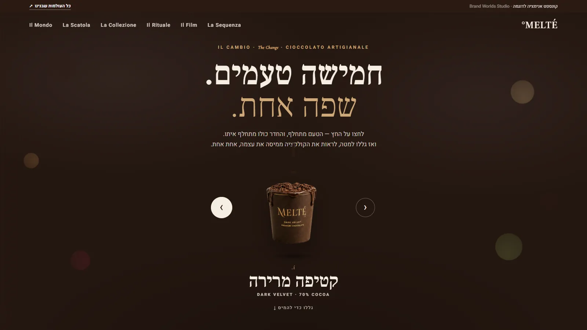
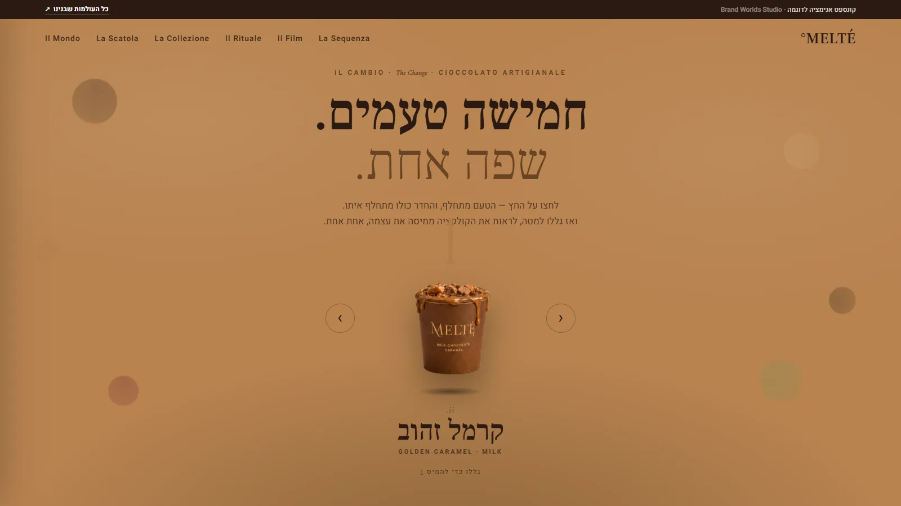
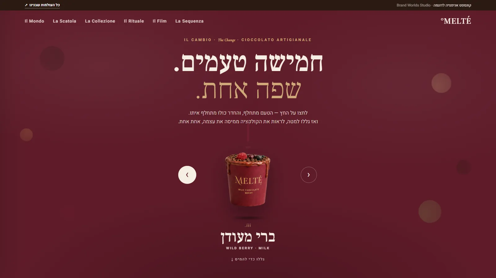
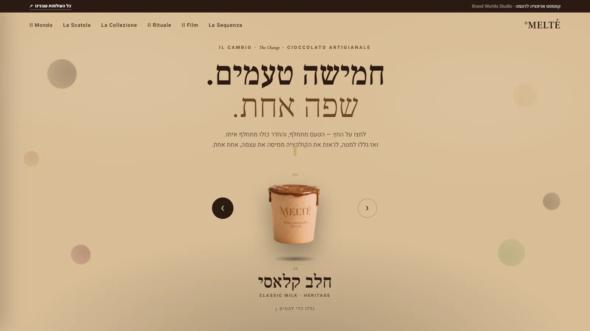
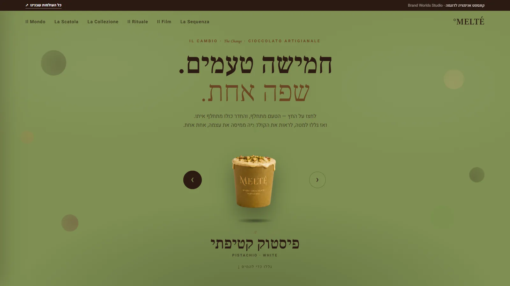
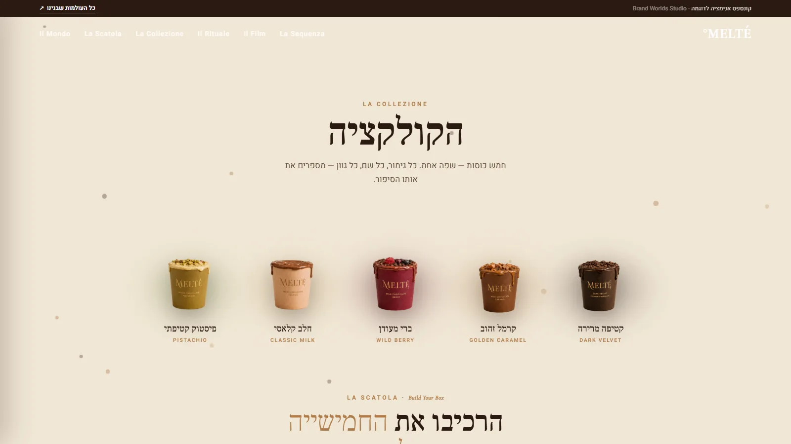
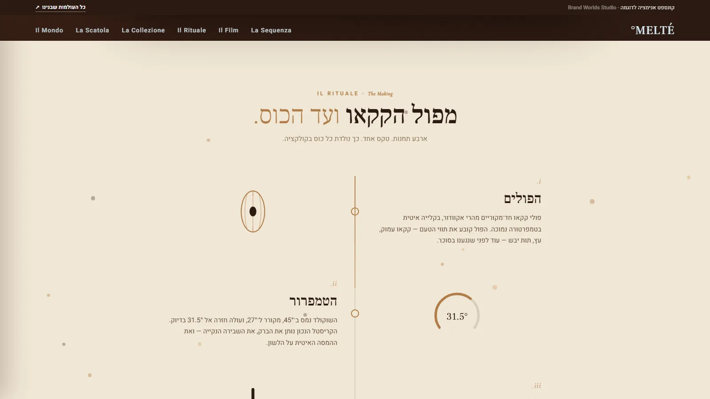
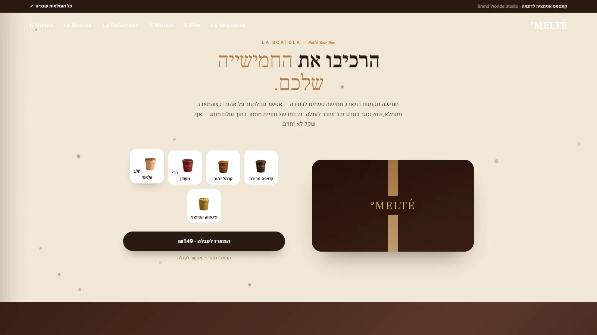

MELTÉ° הוא בוטיק כוסות שוקולד איטלקי שלא קיים. בניתי אותו בסטודיו כדי לענות על שאלה שחוזרת אצל כל מי שמוכרת יותר ממוצר אחד: "יש לי חמישה טעמים, וכל אחד צריך להיראות אחרת. איך אני נותנת לכל אחד צבע משלו בלי שהמותג יתפרק לחמישה מותגים?" זו שאלה של מיתוג שוקולד, אבל גם של קוסמטיקה, של קפה, של כל קולקציה. המאמר הזה עובר על MELTÉ° שכבה אחרי שכבה ומראה מה נשאר קבוע כשכל המסך מחליף צבע. אפשר לפתוח את העולם עצמו בחלון נפרד ולקרוא במקביל.
הלקוחה והמקום
סמטה בטורינו. סדנה קטנה עם קערת טמפרור מנחושת, מדחום שעוצר ב-31.5 מעלות, ומדף עץ שעליו חמש כוסות בלבד. הבעלים לא מייצרים טבלאות ולא פרלינים. הם מוזגים שוקולד לכוס, ביד, שכבה אחר שכבה, ונותנים לטיפה אחת לגלוש על הדופן ולקפוא שם. לכל כוס יש רגע: אחרי ערב כבד, בבוקר רענן, בערב קיץ. הלקוחה לא קונה "שוקולד". היא קונה את הרגע שבו הוא נמס.
זה כל הבריף. שלוש מילים של DNA: פרימיום, עשיר, קטיפתי. והבטחה אחת שכל השאר נגזר ממנה:
המוצר הוא כוס שוקולד. מה שנמכר הוא ההמסה.
שימי לב שההבטחה לא אומרת מילה על חום, זהב או לוגו. היא אומרת מה המותג מוכר באמת. ומהרגע שזה ברור, השאלה "איזה צבע לתת לפיסטוק" מקבלת תשובה פשוטה: כל צבע שרוצים, כל עוד ההמסה נשארת אותה המסה.
מה זה עולם מותג, דרך MELTÉ°
עולם מותג הוא לא לוגו ולא ספר מותג. הוא שכבת החלטה: סט חוקים שקובע מראש מה מותר להשתנות ומה אסור, כך שכל טעם חדש וכל נקודת מגע חדשה יודעים מה לעשות בלי להתחיל מאפס. ב-MELTÉ° השכבה הזאת מורכבת מארבעה חוקים בלבד:
הטעם הוא הצבע
אין צבע "מותג" נפרד. קטיפה מרירה היא חדר כהה, קרמל זהוב הוא חדר קרמל, פיסטוק הוא חדר ירוק. החדר כולו נצבע בטעם, והדיו מתהפך איתו: קרם על כהה, שוקולד על בהיר.
חתימה אחת: הדריפ
טיפה אחת שגולשת על דופן הכוס וקופאת. היא מופיעה על הכוס, בפתיח, ברצף ההמסה, בסרט ובטקס ההכנה. זה לא קישוט. זה הדבר שהעין מזהה לפני השם.
קצב אחד: ההמסה
שום דבר לא נחתך. הכוס יוצאת למעלה, יש רגע ריק, הטעם הבא נוחת. השוקולד נמזג לאט. זה הקצב של "נמס", גם כשהמסך מחליף צבע בשנייה.
קול אחד
כותרת איטלקית קצרה, ומתחתיה עברית. Il Cambio, La Sequenza, Il Rituale, La Scatola. לכל טעם שלוש מילים בדיוק: "מריר. עמוק. עוצמתי." המילים מתנהגות כמו הכוס: קטנות, צפופות, עשירות.
ארבעה חוקים. עכשיו נראה איך הם מחזיקים שש נקודות מגע שונות לגמרי, כולל אחת שבה כל המסך מחליף צבע.
שכבה 1: Il Cambio, החדר שמתחלף
העולם נפתח בכוס אחת במרכז המסך ובחץ. לחיצה: הכוס יוצאת למעלה, רגע ריק, הטעם הבא נוחת, והחדר כולו נצבע מחדש. חמישה טעמים, חמישה חדרים. זו התשובה הוויזואלית לשאלה מהפתיח: כן, לכל טעם יש צבע משלו. כל הצבע של המסך, לא רק תווית.





חמישה חדרים. הכותרת, הכוס, החץ והשם לא זזים מילימטר.
וכאן החוק הראשון עובד קשה: כשהכול משתנה, מה שלא משתנה בולט. הכותרת "חמישה טעמים. שפה אחת." נשארת באותו מקום, הכוס באותו גובה, השם באותה טיפוגרפיה. הלקוחה לומדת תוך שלוש לחיצות מה המותג ומה הטעם, בלי שמישהו הסביר לה.
מה נשאר קבועהכוס במרכז, השם מתחתיה, הקצב של יציאה־ריק־נחיתה.
שכבה 2: La Sequenza והקולקציה
מתחת לפתיח, הגלילה ממיסה את הקולקציה: חמש כוסות בזו אחר זו, כל אחת עם דריפ בצבע שלה וכרטיס טעם. ובכרטיס, תמיד אותם ארבעה שדות: בסיס, מרקם, תווי טעם, רגע אכילה. קטיפה מרירה: 70% אקוודור, סיומת ארוכה, אחרי ערב כבד עם קפה שחור. פיסטוק קטיפתי: שוקולד לבן, אוורירי, ערב קיץ עם תה ירוק.

זה ההבדל בין עיצוב מוצר למיתוג קולקציה. עיצוב מוצר שואל איך הכוס הזאת נראית. מיתוג קולקציה שואל מה משותף לכל חמש הכוסות, כך שכשיתווסף טעם שישי הוא כבר יידע איך להיראות: אותה כוס, דריפ בצבע החדש, אותם ארבעה שדות, שלוש מילים. הטעם השישי מעוצב עוד לפני שהמציאו אותו.
מה נשאר קבועהכוס, הדריפ, ארבעת השדות, שלוש המילים.
שכבה 3: Il Film
עשר שניות. שוקולד מומס נמזג על כוס קטיפה מרירה, המצלמה מקיפה אותה לאט, והלוגו נשאר חד כל הזמן. אין דיבור ואין מוזיקת מעברים. אותו DNA, הפעם בתנועה קולנועית.
למה בוטיק שוקולד צריך סרט של עשר שניות? כי סרט מותג מגדיר תנועה, ותנועה היא הדבר שהכי קשה לזייף אחר כך. מהרגע שיש תנועה אחת (השוקולד נמזג, הכוס נשארת), כל ריל וכל סטורי שיצולמו בעתיד יודעים איך להתנהג: לאט, מקרוב, בלי חיתוכים. הסרט נוצר בכלי וידאו AI מאותה מערכת תמונה של הכוסות, ולכן הוא מסכים איתן. על השיטה יש מאמר נפרד.
מה נשאר קבועהכוס במרכז, הדריפ, הקצב האיטי, הלוגו חד.
שכבה 4: Il Rituale, ארבע תחנות
מפול הקקאו ועד הכוס: הפולים, הטמפרור, המזיגה, הרגע. קו זהב אחד גדל עם הגלילה ומחבר את ארבע התחנות. בתחנה השנייה מד חום עולה ל-31.5 מעלות בדיוק, כי זה הקריסטל שנותן את הברק ואת ההמסה האיטית על הלשון. בתחנה השלישית כתוב המשפט שמגדיר את המותג: "הדריפ שגולש על הדופן הוא לא קישוט. הוא חתימת המותג."

למה בוטיק צריך שכבת טקס? כי זה המקום שבו הפרימיום מקבל הוכחה. "עשיר וקטיפתי" הן מילים. 31.5 מעלות, קלייה איטית, מזיגה ביד שכבה אחר שכבה, זה מה שמצדיק את המחיר בלי לומר את המילה "איכות". ולבוטיק אמיתי זה גם המקור לכל תוכן "מאחורי הקלעים": כשהטקס כתוב מראש כחלק מהעולם, הסטורי מהסדנה כבר יודע איך להיראות ומה להגיד.
מה נשאר קבועקו הזהב, הספרות הרומיות, הדריפ, המספר 31.5.
שכבה 5: La Scatola, המארז
חמישה מקומות במארז, חמישה טעמים לבחירה, אפשר לחזור על אהוב. כשהמארז מתמלא, המכסה נסגר בסרט זהב והוא עובר לעגלה. יש עגלה, יש סכום, יש כפתור לקופה. אף שקל לא מחויב, זה דמו. אבל זו הנקודה: המסחר לא יושב באתר נפרד עם עיצוב "של מערכת החנות". הוא חי בתוך העולם.

כאן ההבטחה נסגרת. "מה שנמכר הוא ההמסה" הופך משורה במסמך אסטרטגיה למארז שהלקוחה הרכיבה בעצמה, בצבעים שכבר למדה בפתיח, עם הזהב שראתה בטקס. לבוטיק אמיתי זה אומר שהאריזה, החנות אונליין והעגלה הם חלק מהמיתוג בדיוק כמו הלוגו. הלקוחה שראתה את הסרט באינסטגרם ומגיעה לקנות צריכה להרגיש שהיא עדיין בתוך אותו סרט, עד הרגע שהמארז נסגר.
מה נשאר קבועאותן כוסות, אותו זהב, אותו שוקולד כהה, השם על המכסה.
שכבה 6: Le Storie, הסטוריז
וזה החלק שבו רוב הבוטיקים מתפזרים. הפוסט של הטעם החדש מיוצר בכלי אחד, הסטורי מהסדנה בטלפון, והריל אצל עורכת חיצונית. שלושה מקורות, שלוש שפות, ולפעמים שלושה חומים שונים. ב-MELTÉ° הסטוריז לא נוצרות מחדש. הן נחתכות מהעולם: Il Cambio בגובה של טלפון, הסרט בפורמט אנכי, ורצף ההמסה כפי שהוא נראה על המסך הקטן. אותה כוס, אותו דריפ, אותה טיפוגרפיה.
חמישה טעמים. una lingua.
הטעם מתחלף, החדר מתחלף איתו. הכוס לא זזה.
עשר שניות dentro.
השוקולד נמזג, הכוס נשארת. זו התנועה של המותג.
אותו DNA in ogni gusto.
חמש כוסות נמסות אחת אחת. הכרטיס לא משתנה, רק הטעם.
שלוש סטוריז. לא תוכן חדש, אלא אותו עולם בפורמט של הטלפון.
ההשלכה לבוטיק אמיתי פשוטה: כשיש עולם, תוכן הסושיאל הוא נגזרת ולא פרויקט. הסטורי של "הטעם של החודש" לוקח את החדר בצבע של הטעם, את הכוס עם הדריפ ואת שלוש המילים, ומוכן תוך דקות. לא צריך לחשוב איך זה אמור להיראות, כי העולם כבר ענה.
מה נשאר קבועהכול. הסטורי הוא העולם, רק צר יותר.
שש נקודות מגע, טבלה אחת
| נקודת מגע | מה היא עושה | מה נשאר קבוע |
|---|---|---|
| Il Cambio | פותח את העולם, מלמד את הצבעים | הכוס במרכז, השם מתחתיה |
| La Sequenza והקולקציה | הופכת חמישה טעמים למערכת | הדריפ, ארבעת השדות, שלוש מילים |
| Il Film | מגדיר את התנועה | השוקולד נמזג, הכוס נשארת |
| Il Rituale | מוכיח את הפרימיום | קו הזהב, 31.5°, הדריפ |
| La Scatola | הופכת את העולם לרכישה | אותן כוסות, אותו זהב, השם על המכסה |
| Le Storie | מפיצות את העולם | הכול, בפורמט צר |
קראי את העמודה השמאלית מלמעלה למטה. זו ההגדרה הכי פשוטה שיש לי לעולם מותג: רשימת הדברים שלא משתנים כשעוברים מנקודת מגע לנקודת מגע. וב-MELTÉ° יש בה שיעור נוסף: אפשר להחליף את כל הצבע של המסך, כל עוד הרשימה הזאת נשארת.
מה זה אומר לבוטיק שלך: מיתוג שוקולד שנבחר ולא מושווה
MELTÉ° דמיוני, אבל הפער שהוא פותר אמיתי מאוד. בוטיק עם חמישה מוצרים מייצר בקלות חמש אריזות שנראות כמו חמישה מותגים, ואז אתר אצל בונה אתרים, אינסטגרם אצלך וקטלוג אצל גרפיקאית. הלקוחה פוגשת שבעה עסקים. היא לא יכולה לזהות אותך, ולכן היא עושה את הדבר היחיד שנשאר לה: משווה אותך במחיר לשוקולד שמונח לידך על המדף.
בוטיק עם עולם נבחר. בוטיק בלי עולם מושווה. ההבדל הוא לא כמה יפה כל טעם בנפרד, אלא האם כולם ממשיכים את אותה הבטחה.
בשיחות האבחון אני עושה בדיוק את התרגיל שעשינו כאן, על העסק האמיתי: פורסות את כל המוצרים, האריזה, האתר וחמישה פוסטים אחרונים על שולחן אחד ושואלות מה נשאר קבוע. כשיש קולקציה, התשובה כמעט תמיד היא "הלוגו". וכמעט תמיד זה לא מספיק, כי הלוגו הוא הדבר הכי קטן על האריזה.
איך זה נבנה
בקצרה, כי יש על זה מאמר שלם: ה-DNA נכתב קודם, בשלוש מילים והבטחה אחת. ממנו נגזרה מערכת תמונה אחת: חמש כוסות, דריפ, זהב, קרם ושוקולד כהה. הסרט נוצר ב-AI מאותה מערכת, ולכן הוא מסכים עם הכוסות. הקוד תפר הכול לחוויה אחת: החדר שמתחלף, רצף ההמסה, קו הזהב של הטקס והמארז עם העגלה. הסטוריז נחתכו בסוף, מהעולם המוכן. זה הסדר שאני עובדת בו בכל עולם: DNA לפני כלים, תמיד.
עולמות שכנים
MELTÉ° הוא הפרק השני בסדרת "סיפורי עולמות". הפרק הראשון פירק בית מקרונים, ועוד שני עולמות קולינריים מהסטודיו קרובים ברוח ושונים בסיפור:
שאלות נפוצות על מיתוג שוקולד כעולם מותג
מה זה מיתוג שוקולד בגישת עולם מותג?
מיתוג שמתחיל מהבטחה אחת ולא מלוגו. מההבטחה נגזרים הצבע של כל טעם, החתימה (הדריפ), הקצב (ההמסה) והמילים, ואז כל נקודת מגע (האתר, הכוס, האריזה, הסרט, הטקס, המארז, הסטוריז) מתורגמת מאותה חוקיות. הלקוחה מזהה את הבוטיק בכל טעם ובכל מקום, גם בלי לראות את השם.
איך נותנים לכל טעם צבע משלו בלי לשבור את המותג?
קובעים מראש מה מותר להשתנות ומה לא. ב-MELTÉ° הטעם הוא הצבע והחדר כולו נצבע בו, אבל הכוס נשארת במרכז, השם מתחתיה, הדריפ על הדופן, הקצב איטי והשפה קבועה. כשהחוקים קבועים, אפשר להחליף את כל הצבע של המסך והמותג נשאר הוא.
האם בוטיק שוקולד קטן צריך סרט מותג?
לא בהכרח סרט ארוך, אבל כן תנועה אחת שמגדירה את המותג. ב-MELTÉ° הסרט הוא עשר שניות: השוקולד נמזג, הכוס נשארת. כשלמותג יש תנועה אחת, כל ריל וסטורי שיצולמו אחר כך כבר יודעים איך להתנהג.
איך נבנה עולם המותג של MELTÉ°?
DNA בשלוש מילים והבטחה אחת, מערכת תמונה אחת, סרט שנוצר בכלי וידאו AI מאותה מערכת, וקוד שתופר הכול לחוויה אחת עם מארז ועגלה. הסטוריז נחתכות מאותו עולם. MELTÉ° הוא קייס סטדי של הסטודיו, לא מותג מסחרי.
מה קורה כשהאריזה, האתר והאינסטגרם מעוצבים בנפרד?
הלקוחה פוגשת חמישה מוצרים שנראים כמו חמישה מותגים, ועוד אתר ואינסטגרם שנראים כמו שניים נוספים. היא לא יכולה לזהות את הבוטיק, ולכן משווה אותו במחיר. עולם מותג סוגר את הפער: כל טעם וכל נקודת מגע ממשיכים את אותה שפה, והבוטיק נבחר ולא מושווה.
MELTÉ° הוא עולם מספר 02 בסדרת "סיפורי עולמות": בכל פרק אני לוקחת עולם אחד מהארכיון ומפרקת אותו לשכבות, עם הנכסים האמיתיים שלו מוטמעים בעמוד. החדרים, הסרט, הטקס והמארז שמופיעים כאן הם אותם קבצים שמריצים את העולם עצמו, לא גרסאות "למאמר". הפרק הקודם, הסיפור של Pétale°, עשה את אותו תרגיל על בית מקרונים. זו הדרך שלי להראות שעולם מותג הוא לא רעיון אלא קבצים שמדברים באותה שפה.
חמישה טעמים, חמישה חדרים, כוס אחת.
ומכולם, דבר אחד שלא נמס.
זה מה שהלקוחה מזהה.
וזה מה שגורם לה לבחור.
מה נשאר קבוע במותג שלך?
באבחון פער המותג פורסות יחד את המוצרים, האריזה, האתר והפוסטים על שולחן אחד, ובודקות איפה יש עולם ואיפה יש רק נראות.
לאבחון פער המותג ←